�V.広告
�B1976〜1980年の広告
・1976年
ヘッドフォンはこの時期、小判型ユニットを使った新機種の開発中で表立った動きはない。ラウドスピーカーは1960年代半ばから続いていたESSシリーズからELSシリーズにモデルチェンジした。パワーアンプは早くも第2段（DA-80)が登場し、しかもモノラルバージョン(DA-80M）まで現れた。またこの年、初めてカラー広告を見かけた。横向きの広告が多かった年である。
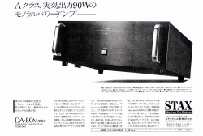 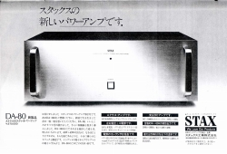 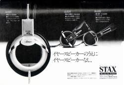 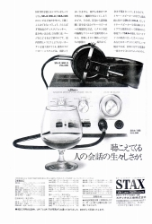
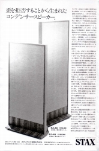 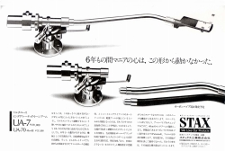 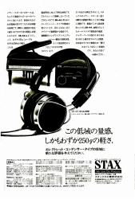 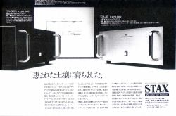
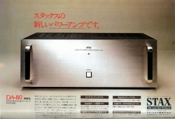 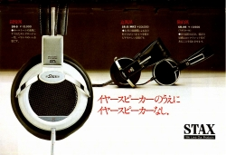 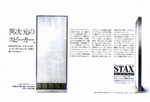 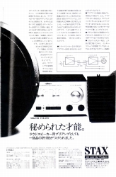
・1977年
事実上のプリアンプSRA-10Sの改良機SRA-12Sが登場した。引き続きアンプ関連の広告が多い。アナログ関係では、前年に予告されていたUA-7の改良版、カーボン使用のUA-7/CFが発売された。またカートリッジのCP-XはCP-Yにモデルチェンジした。CP-Yは従来までの「純」コンデサー型ではなく、エレクトレットコンデンサー型である。デザインが一般的になり他社のアームでも使いやすくなった。
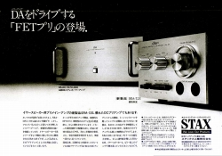 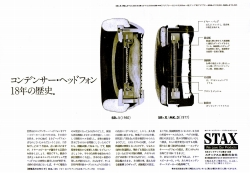 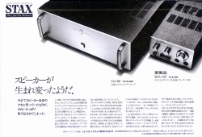
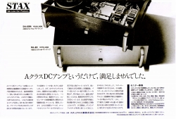 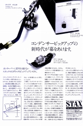 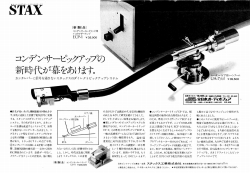 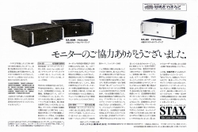
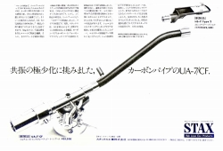
・1978年
従来の円形ユニットではなく、楕円形ユニットを使ったSR-Σ（シグマ）が登場した。待望の本格的なプリアンプCA-Xがついに登場した。非常にこった製品だが、同社自慢のはずのコンデンサー型カートリッジの入力回路を設けなかったことに、違和感を感じる。かつて、エレクトレットコンデンサー型カートリッジを普及させようとしたメーカーは、自社のアンプに内蔵したが・・・。ラウドスピーカーが4S/6Sから4X/8Xにモデルチェンジした。
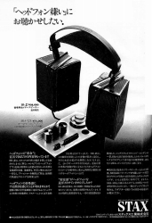 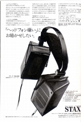 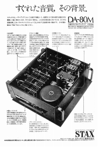 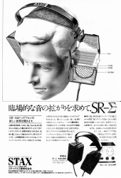 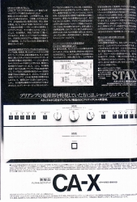
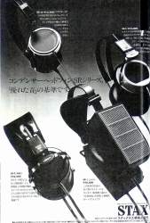 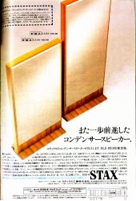 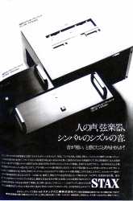 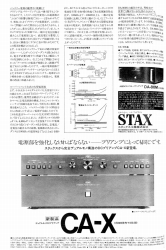
・1979年
この年では、ドライバーユニットSRM-1がデビューした。当時、他社を含めてアンプのスピーカー端子に昇圧トランスを内蔵したアダプターでドライブするのが一般的であり、今日の礎となった製品である。またヘッドホン本体も現在の原型と言えるSR-Λ(ラムダ）が登場した。アナログ関係では当時の流行であるシェル一体型のストレートパイプのUA-9/90が登場した。
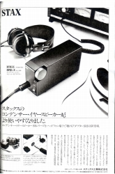 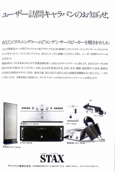 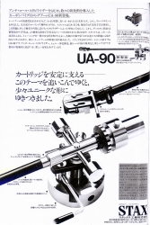 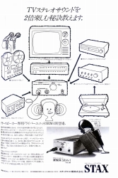 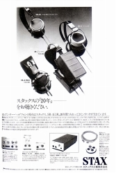
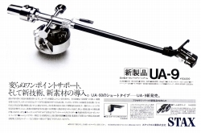 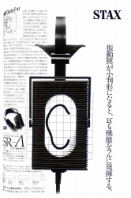 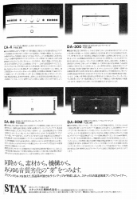
・1980年
この年から広告点数が減り始める。掲載回数の減少だけでなく、新規の製作も減り、同じ広告の複数使用でカバーする感じだった。ヘッドフォン関連では、スタンドが購入者プレゼントで登場している。現行品HPS-2の前のモデル、HPS-1とほぼ同じ物のようだ。アンプはプリ、メインともニューモデルが登場した。パワーアンプDA-100M、プリアンプCA-Yが登場。
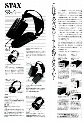 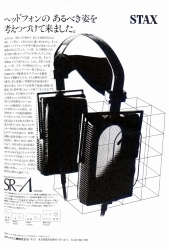 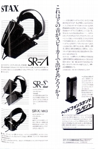 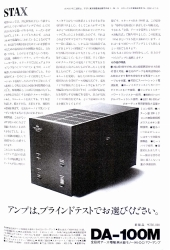
→�C1981〜1985年の広告